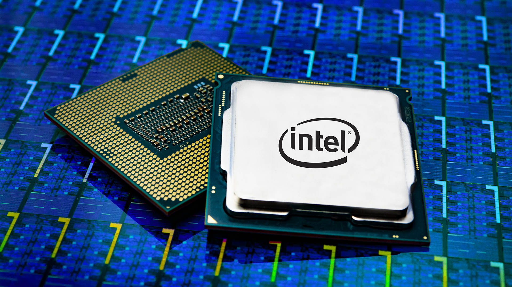
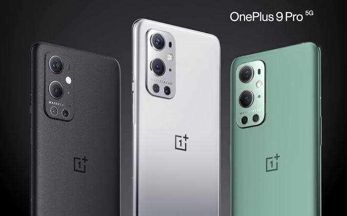

Intel will make others' chips in major turnaround effort under new CEO
24/03/21
CEO Pat Gelsinger offers a more confident assessment after the chipmaker struggled for years to sustain processor progress.
After years of struggling to keep up with competitors, Intel will adopt their core strategy by making other companies' chips for them, new Chief Executive Pat Gelsinger said Tuesday. Intel largely has focused on making its own chips, but that'll change with the new and independent Intel Foundry Services business unit. If the shift works, it'll mark a major turnaround for a decades-old Silicon Valley powerhouse. For years, technology leadership and the "Intel Inside" marketing campaign kept the chipmaker at the forefront of personal technology. But in recent years, Intel failed to tap into the mobile market and has suffered several delays to PC processor progress.
Slack adds ability to direct message people outside your company
24/03/21

Slack, which offers instant-messaging within companies, now lets you exchanges messages with people outside your company. Slack Connect DMs, announced in October, are designed to work with partner companies or clients. Paid users will be able to use the new feature starting Wednesday, and you'll need an email address for the person you're connecting with. To send a Connect DM, you create a new message and should see a "DM outside your company" option in the top right of the screen. Once you click that, you can enter the person's email address.
"Once your partner accepts the emailed invitation, they'll automatically appear in your list of direct message recipients and you'll be able to message them in Slack," the company said. "This includes any current user of Slack, even those on the free plan." Slack is also planning to expand this feature so that several companies will be able to link together to create a private business network with unified directories, channel discovery and other features.
24/03/21
One Plus launch their new flagship phones and they might just be the best on the market now
One Plus has always been one of the top options for people looking for the top of the line android flagship with all the best specs like loads of ram the fasted mobile processor and the best camera but that last category has been what usually holds one plus back but not this year
This year one plus has teamed up with Hasselblad the company that made the original cameras for the appolo mission that made it to the moon and they have been making cameras ever since so they know how to make a good camera lens the reviews of the new one plus are as we expected and the new camera is one of the best on the android market and even trades blows with apples camera on the iphone 12